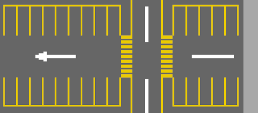

Instructions
Press the Left and Right arrow keys to turn the vehicle.
Press the Up and Down arrow keys to accelerate/decelerate.
Press the Space bar when the vehicle is on a button to simulate a press.
Press the Esc key to show this instruction again.
Page is only interactable using the vehicle.

Welcome
We're here to help you make your project a success. Trangar helps you flesh out your ideas to put them on paper, or
implement them in working code.
We have experiences with a very diverse platform range. Some projects include phone apps, websites, high-performance
services and even down to embedded firmware. Ranging from well-known programming languages like C#.NET and Typescript, to lesser known languages like Kotlin and Rust.
The programming language is always up to you. Every situation calls for a different solution, and non-project
requirements are also important. Do you have some in-house knowledge on a specific language? Then it makes sense to
do the project in that language as well. This way, you're never dependent and will always have options in the
future.
You can contact us by sending an email to contact@trangar.com.
 /VictorKoenders
/VictorKoenders